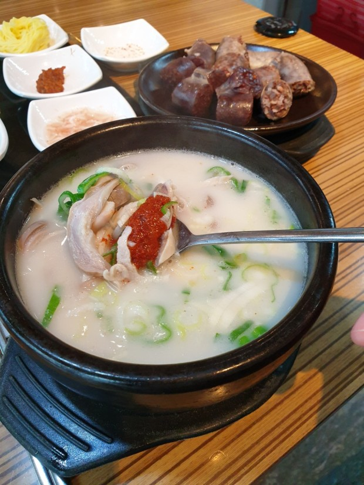

돼지국밥
돼지의 뼈와 살코기를 푹 삶아 우려낸 국물에 삶아진 살코기를 썰어 고명으로 넣고 밥을 말아 먹는 식당 음식. 부산광역시의 대표적인 향토음식이다.

돼지국밥의 기원에는 여러 설이 있고, 아직 명확한 결론이 나지 않은 상태이다. 유력한 가설 중 하나는 이북 전래설인데,
이 설에 따르면 함경남도 지역에서 먹던 음식이지만 한국전쟁 당시 흥남철수 등을 통해 대거 월남한 함흥 및 그 일대 사람들과
함께 정착되어 밀면과 함께 경상남도, 특히 부산의 대표적인 향토 음식이 되었다고 본다.
비슷한 북한 음식인 성계탕 문서 참조.